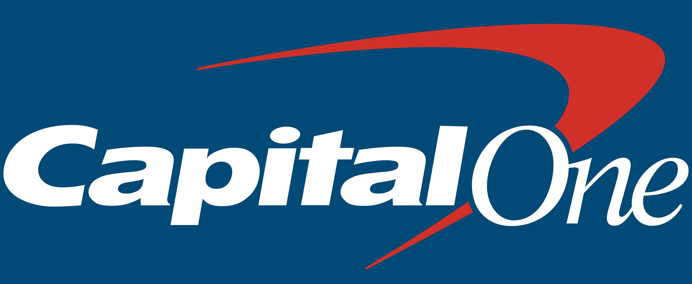

Savings accounts can help your money grow and prevent it from losing value because of inflation.
Take advantage of today's high rates and open an account today.
All of these savings accounts are FDIC insured and offer a higher APY than the national average.
3. Capital One

Capital One 360 performance savings is a great mostly online savings account that still has a few
physical branch locations, making it ideal for customers that want a mostly online experience while still
having access to a physical branch if needed. Capital One's savings account offers 4.25% APY, no account
fees, and 24/7 customer support. Capital One 360 performance savings is also FDIC insured and has a $0 minimum opening deposit.
The Capital One savings account can also be paired with their checking account so you can have all
your accounts in one bank. With great APY, no fees, no account minimum, and FDIC-insured Capital One
is another great choice.
Highlights:
• Access to physical branches
• No account fees
• excellent 24/7 customer support
APY(as of May 2024):
4.25%
These are the best savings accounts that can help you make the most out of your money, each of these accounts is
useful and unique in its own way so hopefully you were able to find something that suits your needs.
Disclaimer: The information provided on this website is for educational and informational purposes only.
It is not intended to be, nor should it be construed as, financial or investment advice.
thefinancialposts.com does not provide personalized financial advice or recommendations based on
individual circumstances. Should you need such advice, please consult a licensed financial or tax
advisor.